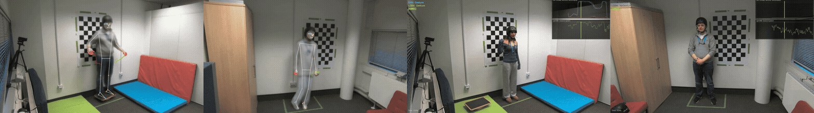
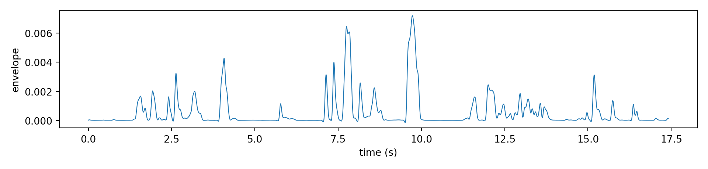
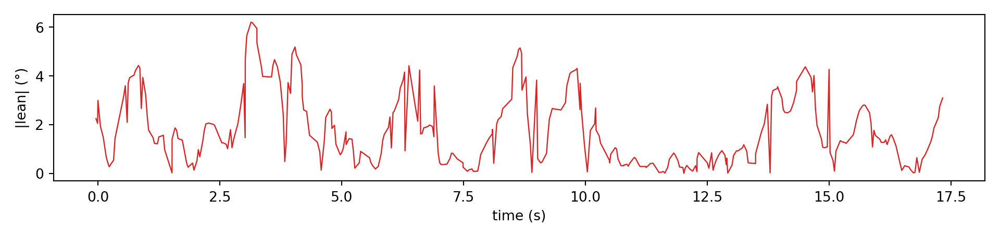
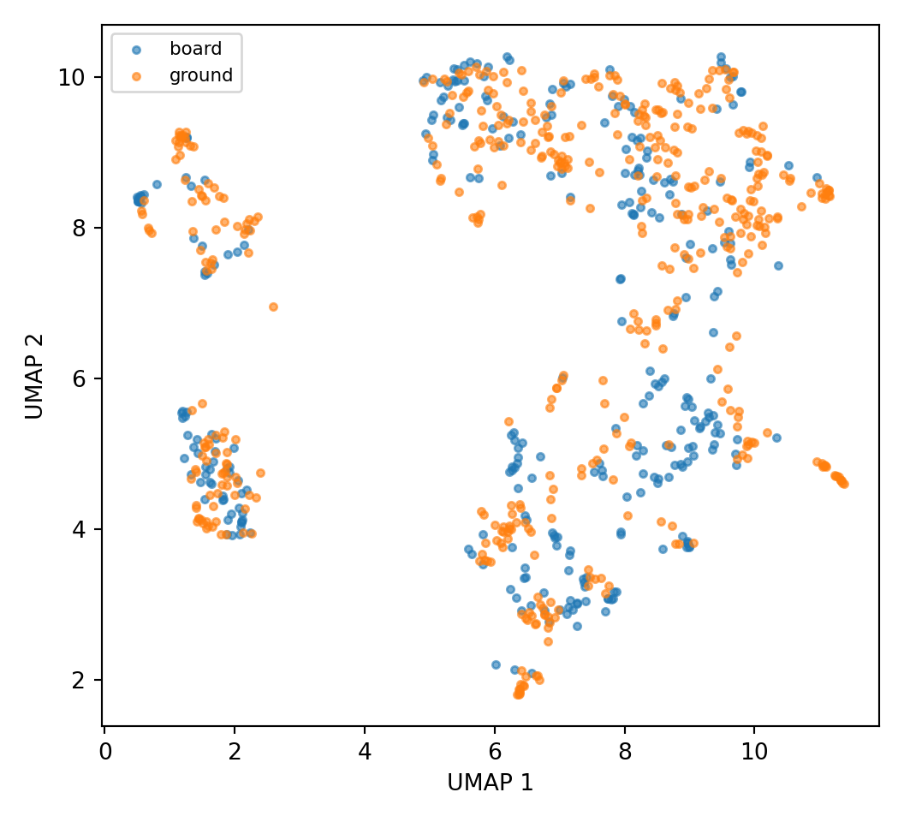
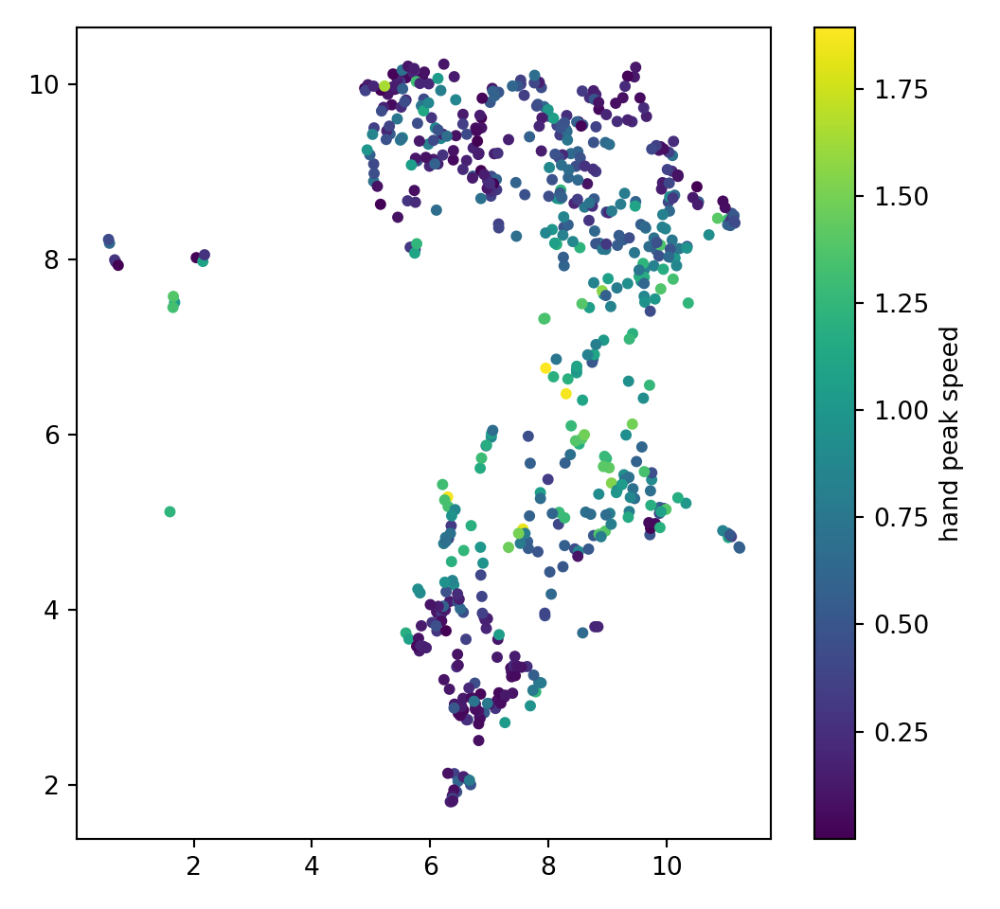
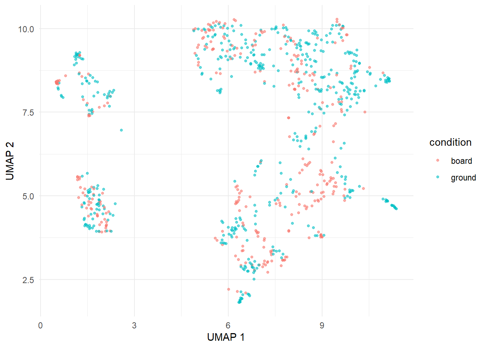
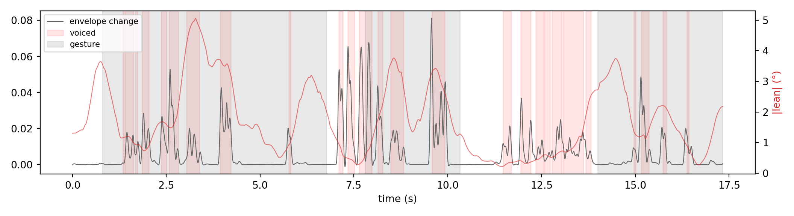

import os, re, glob
import numpy as np
import pandas as pd
import matplotlib.pyplot as plt
CORPUS = "../.."
meta_path = f"{CORPUS}/metadata.csv"
demo_path = f"{CORPUS}/demographics.csv"
gyro_path = f"{CORPUS}/gyroscope.csv"
acoustics = f"{CORPUS}/TS_acoustics"
gestures = f"{CORPUS}/gestureclassifications"
videos = f"{CORPUS}/videos"
audios = f"{CORPUS}/audios"
def parse_pair_trial(path):
name = os.path.basename(path.replace("\\", "/")) # normalise Windows separators
m = re.match(r"(?:env|f0)_(\d+)_(\d+)_(\d+)_", name)
return f"{m.group(1)}_{m.group(2)}", int(m.group(3))
def mask_from_spans(spans, time):
m = np.zeros(len(time), dtype=bool)
for on, off in spans[["onset", "offset"]].itertuples(index=False):
m |= (time >= on) & (time <= off)
return mCheatsheet: loading the BalanceCorpus
MDIG2026

Every channel is keyed by pair (103_203) and trial (12). Set CORPUS once.
1 Setup
library(tidyverse)Warning: package 'tidyverse' was built under R version 4.3.3Warning: package 'tidyr' was built under R version 4.3.3Warning: package 'dplyr' was built under R version 4.3.3Warning: package 'stringr' was built under R version 4.3.3Warning: package 'lubridate' was built under R version 4.3.3CORPUS <- "../.."
meta_path <- file.path(CORPUS, "metadata.csv")
demo_path <- file.path(CORPUS, "demographics.csv")
gyro_path <- file.path(CORPUS, "gyroscope.csv")
acoustics <- file.path(CORPUS, "TS_acoustics")
gestures <- file.path(CORPUS, "gestureclassifications")
videos <- file.path(CORPUS, "videos")
audios <- file.path(CORPUS, "audios")2 Metadata
meta = pd.read_csv(meta_path)
meta.head() pair_id ... textgrid_file_name
0 103_203 ... 103_203_12_20250113_152455_doughnut_board_p1.T...
1 103_203 ... 103_203_13_20250113_152513_spinach_board_p1.Te...
2 103_203 ... 103_203_14_20250113_152536_balloon_board_p1.Te...
3 103_203 ... 103_203_15_20250113_152557_bacon_board_p1.Text...
4 103_203 ... 103_203_16_20250113_152613_chlorine_board_p1.T...
[5 rows x 20 columns]meta["clue_giver_condition"].value_counts()board 600
ground 600
Name: clue_giver_condition, dtype: int64
Demographics
demo = pd.read_csv(demo_path)
meta_demo = (meta
.merge(demo.add_prefix("p1_"), left_on="participant_1_id", right_on="p1_participant_id", how="left")
.merge(demo.add_prefix("p2_"), left_on="participant_2_id", right_on="p2_participant_id", how="left"))
meta_demo.shape(1200, 52)3 Acoustics
3.1 Amplitude envelope
time is in milliseconds.
envelope_files = glob.glob(f"{acoustics}/env_*.csv")
pair, trial = parse_pair_trial(envelope_files[0])
env = pd.read_csv(envelope_files[0])
env["time_s"] = env["time"] / 1000.0
print(pair, trial, env.shape)103_203 12 (8708, 7)env.head() time audio envelope ... envelope_norm envelope_change time_s
0 0.0 0.000000 0.000031 ... 0.028613 -0.000055 0.000
1 2.0 0.000000 0.000034 ... 0.028897 0.000008 0.002
2 4.0 -0.000119 0.000037 ... 0.029175 0.000069 0.004
3 6.0 -0.000204 0.000039 ... 0.029442 0.000127 0.006
4 8.0 -0.000031 0.000042 ... 0.029693 0.000180 0.008
[5 rows x 7 columns]fig, ax = plt.subplots(figsize=(10, 2.4))
ax.plot(env["time_s"], env["envelope"], lw=0.8)
ax.set_xlabel("time (s)"); ax.set_ylabel("envelope")
plt.tight_layout(); plt.show()
envelope_files <- list.files(acoustics, pattern = "^env_.*\\.csv$", full.names = TRUE)
env <- read_csv(envelope_files[1]) |> mutate(time_s = time / 1000)
head(env)# A tibble: 6 × 7
time audio envelope filename envelope_norm envelope_change time_s
<dbl> <dbl> <dbl> <chr> <dbl> <dbl> <dbl>
1 0 0 0.0000309 103_203_12_1_… 0.0286 -0.0000553 0
2 2 0 0.0000337 103_203_12_1_… 0.0289 0.00000782 0.002
3 4 -0.000119 0.0000365 103_203_12_1_… 0.0292 0.0000688 0.004
4 6 -0.000204 0.0000392 103_203_12_1_… 0.0294 0.000127 0.006
5 8 -0.0000305 0.0000417 103_203_12_1_… 0.0297 0.000180 0.008
6 10 0.0000916 0.0000440 103_203_12_1_… 0.0299 0.000229 0.01 3.2 F0 and voicing on/offsets
f0 is blank where unvoiced. Rising/falling edges of that give voiced segments.
def voicing_segments(f0_path):
df = pd.read_csv(f0_path)
t = df["time_ms"].to_numpy() / 1000.0
voiced = df["f0"].notna().to_numpy()
edges = np.diff(voiced.astype(int))
onsets, offsets = t[1:][edges == 1], t[1:][edges == -1]
if voiced[0]: onsets = np.r_[t[0], onsets]
if voiced[-1]: offsets = np.r_[offsets, t[-1]]
return pd.DataFrame({"onset": onsets, "offset": offsets})
voicing = []
for f in glob.glob(f"{acoustics}/f0_*.csv"):
p, tr = parse_pair_trial(f)
seg = voicing_segments(f)
seg["pair"], seg["trial"] = p, tr
voicing.append(seg)
voicing = pd.concat(voicing, ignore_index=True)
print(f"{voicing.groupby(['pair','trial']).ngroups} trials, {len(voicing)} voiced segments")80 trials, 2317 voiced segmentsvoicing.head() onset offset pair trial
0 1.345010 1.377082 103_203 12
1 1.401136 1.623634 103_203 12
2 1.669737 1.735885 103_203 12
3 1.848137 2.034554 103_203 12
4 2.359281 2.507613 103_203 12vspan = voicing[(voicing["pair"] == pair) & (voicing["trial"] == trial)]
voiced_mask = mask_from_spans(vspan, env["time_s"].to_numpy())
print(f"{voiced_mask.mean():.0%} voiced")30% voicedvoicing_segments <- function(f0_path) {
df <- read_csv(f0_path, show_col_types = FALSE)
t <- df$time_ms / 1000
voiced <- !is.na(df$f0)
edges <- diff(as.integer(voiced))
onsets <- t[-1][edges == 1]
offsets <- t[-1][edges == -1]
if (voiced[1]) onsets <- c(t[1], onsets)
if (voiced[length(voiced)]) offsets <- c(offsets, t[length(t)])
tibble(onset = onsets, offset = offsets)
}
f0_files <- list.files(acoustics, pattern = "^f0_.*\\.csv$", full.names = TRUE)
head(voicing_segments(f0_files[1]))# A tibble: 6 × 2
onset offset
<dbl> <dbl>
1 1.35 1.38
2 1.40 1.62
3 1.67 1.74
4 1.85 2.03
5 2.36 2.51
6 2.58 2.824 Gyroscope
Rows arrive unsorted; AngleX wraps at ±180°; column names carry a degree sign.
gyro_all = pd.read_csv(gyro_path)
def load_gyro(pair, trial):
g = gyro_all[(gyro_all["group_name"].astype(str) == pair) &
(gyro_all["trial_number"].astype(int) == trial)].copy()
g["seconds"] = (pd.to_datetime(g["time"]) - pd.to_datetime(g["time"]).iloc[0]).dt.total_seconds()
g = g.sort_values("seconds").reset_index(drop=True)
angle_col = next(c for c in g.columns if c.startswith("AngleX"))
speed_col = next(c for c in g.columns if c.startswith("AsX"))
angle_unwrapped = np.degrees(np.unwrap(np.radians(g[angle_col].to_numpy())))
g["lean"] = np.abs(angle_unwrapped - np.median(angle_unwrapped))
g["speed"] = np.abs(g[speed_col].to_numpy())
return g
gyro = load_gyro(pair, trial)
print(gyro.shape, f"{gyro['seconds'].iloc[-1]:.1f} s")(347, 25) 17.3 sgyro[["seconds", "lean", "speed"]].head() seconds lean speed
0 -0.040 2.24 1.526
1 -0.007 2.05 1.465
2 0.000 2.99 9.949
3 0.051 1.93 3.723
4 0.111 1.46 15.869fig, ax = plt.subplots(figsize=(10, 2.4))
ax.plot(gyro["seconds"], gyro["lean"], lw=0.9, color="C3")
ax.set_xlabel("time (s)"); ax.set_ylabel("|lean| (°)")
plt.tight_layout(); plt.show()
Onto the envelope’s clock
from scipy.ndimage import uniform_filter1d
def align_gyro_to_envelope(env, gyro, column="envelope", fs=500.0, smoothing_seconds=0.5):
envelope = env[column].to_numpy()
envelope_time = env["time"].to_numpy().astype(float)
if np.median(np.diff(envelope_time)) > 0.5:
envelope_time = envelope_time / 1000.0
gyro_time = gyro["seconds"].to_numpy()
start, end = max(envelope_time[0], gyro_time[0]), min(envelope_time[-1], gyro_time[-1])
keep = (envelope_time >= start) & (envelope_time <= end)
time = envelope_time[keep]
window = max(1, int(smoothing_seconds * fs))
sway_lean = uniform_filter1d(np.interp(time, gyro_time, gyro["lean"]), window)
sway_speed = uniform_filter1d(np.interp(time, gyro_time, gyro["speed"]), window)
return time, envelope[keep], sway_speed, sway_lean
time, envelope_clipped, sway_speed, sway_lean = align_gyro_to_envelope(env, gyro, column="envelope_change")
print(f"{len(time)} samples, {time[0]:.2f}–{time[-1]:.2f} s")8666 samples, 0.00–17.33 s5 Gestures
5.1 Kinematic features
One row per gesture; gesture_id carries pair, trial, role, camera, onset and offset.
gest = pd.read_csv(f"{gestures}/analysis/kinematic_features.csv")
ids = gest["gesture_id"].str.split("_", expand=True)
gest["pair"] = ids[0] + "_" + ids[1]
gest["trial"] = ids[2].astype(int)
gest = gest[gest["gesture_id"].str.contains("clueGiver")].copy()
span = gest["gesture_id"].str.extract(r"_Gesture_([\d.]+)_([\d.]+)$").astype(float)
gest["onset"], gest["offset"] = span[0], span[1]
gest[["pair", "trial", "onset", "offset", "duration",
"space_use", "hand_peak_speed", "hand_peak_jerk"]].head() pair trial onset ... space_use hand_peak_speed hand_peak_jerk
0 103_203 12 0.80 ... 3 0.567906 35.719292
1 103_203 12 7.80 ... 1 0.149600 15.200104
2 103_203 12 14.07 ... 1 0.529351 29.438267
3 103_203 12 0.80 ... 2 0.545544 34.037088
4 103_203 12 7.80 ... 1 0.149600 15.200104
[5 rows x 8 columns]per_trial = (gest.groupby(["pair", "trial"])
.agg(n_gestures=("gesture_id", "size"),
mean_space=("space_use", "mean"),
mean_peak_speed=("hand_peak_speed", "mean"))
.reset_index())
per_trial.head() pair trial n_gestures mean_space mean_peak_speed
0 103_203 12 6 1.500000 0.409982
1 103_203 13 3 1.666667 0.958345
2 103_203 14 6 2.666667 0.827713
3 103_203 15 3 3.666667 1.142895
4 103_203 16 6 2.333333 0.388695gspan = gest[(gest["pair"] == pair) & (gest["trial"] == trial)]
gesture_mask = mask_from_spans(gspan, time)
print(f"{gesture_mask.mean():.0%} of the trial has a gesture")68% of the trial has a gesturegspan[["onset", "offset"]] onset offset
0 0.80 6.77
1 7.80 10.33
2 14.07 17.40
3 0.80 6.63
4 7.80 10.33
5 14.00 17.40gest <- read_csv(file.path(gestures, "analysis", "kinematic_features.csv")) |>
filter(str_detect(gesture_id, "clueGiver")) |>
mutate(
pair = str_c(str_split_i(gesture_id, "_", 1), "_", str_split_i(gesture_id, "_", 2)),
trial = as.integer(str_split_i(gesture_id, "_", 3)),
onset = as.numeric(str_match(gesture_id, "_Gesture_([\\d.]+)_([\\d.]+)$")[, 2]),
offset = as.numeric(str_match(gesture_id, "_Gesture_([\\d.]+)_([\\d.]+)$")[, 3])
)
gest |> select(pair, trial, onset, offset, duration, space_use, hand_peak_speed) |> head()# A tibble: 6 × 7
pair trial onset offset duration space_use hand_peak_speed
<chr> <int> <dbl> <dbl> <dbl> <dbl> <dbl>
1 103_203 12 0.8 6.77 5.96 3 0.568
2 103_203 12 7.8 10.3 2.52 1 0.150
3 103_203 12 14.1 17.4 3.32 1 0.529
4 103_203 12 0.8 6.63 5.8 2 0.546
5 103_203 12 7.8 10.3 2.52 1 0.150
6 103_203 12 14 17.4 3.36 1 0.5185.2 Frame-level detector output
pred_files = glob.glob(f"{gestures}/**/*_predictions.csv", recursive=True)
pred = pd.read_csv(pred_files[0])
print(pred.columns.tolist())['time', 'has_motion', 'Gesture_confidence', 'Move_confidence', 'NoGesture_confidence', 'cnn_class', 'cnn_confidence', 'lgbm_class', 'lgbm_confidence', 'lgbm_nogesture_prob', 'lgbm_gesture_prob']pred.head() time has_motion ... lgbm_nogesture_prob lgbm_gesture_prob
0 0.800000 0.991627 ... 0.040557 0.959443
1 0.833333 0.990773 ... 0.031383 0.968617
2 0.866667 0.989850 ... 0.033220 0.966780
3 0.900000 0.989004 ... 0.035923 0.964077
4 0.933333 0.988297 ... 0.040734 0.959266
[5 rows x 11 columns]5.3 ELAN annotations
import pympi # pip install pympi-ling
eaf_files = glob.glob(f"{gestures}/**/*.eaf", recursive=True)
eaf = pympi.Elan.Eaf(eaf_files[0])
print(eaf.get_tier_names())dict_keys(['CNN', 'LightGBM'])rows = []
for tier in eaf.get_tier_names():
for start_ms, end_ms, value in eaf.get_annotation_data_for_tier(tier):
rows.append(dict(tier=tier, onset=start_ms / 1000, offset=end_ms / 1000, label=value))
annotations = pd.DataFrame(rows)
annotations.head() tier onset offset label
0 CNN 0.800 6.766 Gesture
1 CNN 7.800 10.333 Gesture
2 CNN 14.066 17.400 Gesture
3 LightGBM 0.800 6.633 Gesture
4 LightGBM 7.800 10.333 Gesturelibrary(phonfieldwork)Warning: package 'phonfieldwork' was built under R version 4.3.3eaf_files <- list.files(gestures, pattern = "\\.eaf$", recursive = TRUE, full.names = TRUE)
head(eaf_to_df(eaf_files[1])) tier id content tier_name tier_type id_ tier_ref event_local_id dependent_on
1 1 1 Gesture CNN default 1 <NA> a1 <NA>
6 2 1 Gesture LightGBM default 4 <NA> a4 <NA>
2 1 2 Gesture CNN default 2 <NA> a2 <NA>
3 2 2 Gesture LightGBM default 5 <NA> a5 <NA>
5 2 3 Gesture LightGBM default 6 <NA> a6 <NA>
4 1 3 Gesture CNN default 3 <NA> a3 <NA>
time_start time_end
1 0.800 6.766
6 0.800 6.633
2 7.800 10.333
3 7.800 10.333
5 14.000 17.400
4 14.066 17.400
source
1 103_203_12_1_20250113_152455_doughnut_board_clueGiver_cam02.mp4.eaf
6 103_203_12_1_20250113_152455_doughnut_board_clueGiver_cam02.mp4.eaf
2 103_203_12_1_20250113_152455_doughnut_board_clueGiver_cam02.mp4.eaf
3 103_203_12_1_20250113_152455_doughnut_board_clueGiver_cam02.mp4.eaf
5 103_203_12_1_20250113_152455_doughnut_board_clueGiver_cam02.mp4.eaf
4 103_203_12_1_20250113_152455_doughnut_board_clueGiver_cam02.mp4.eaf
media_url
1 file://d:\\Research_projects\\TilburgMultiscaleSummerschool2026\\Datasets\\BalanceCorpus\\videos\\103_203\\clue_giver\\tmp4g006i41\\103_203_12_1_20250113_152455_doughnut_board_clueGiver_cam02.mp4
6 file://d:\\Research_projects\\TilburgMultiscaleSummerschool2026\\Datasets\\BalanceCorpus\\videos\\103_203\\clue_giver\\tmp4g006i41\\103_203_12_1_20250113_152455_doughnut_board_clueGiver_cam02.mp4
2 file://d:\\Research_projects\\TilburgMultiscaleSummerschool2026\\Datasets\\BalanceCorpus\\videos\\103_203\\clue_giver\\tmp4g006i41\\103_203_12_1_20250113_152455_doughnut_board_clueGiver_cam02.mp4
3 file://d:\\Research_projects\\TilburgMultiscaleSummerschool2026\\Datasets\\BalanceCorpus\\videos\\103_203\\clue_giver\\tmp4g006i41\\103_203_12_1_20250113_152455_doughnut_board_clueGiver_cam02.mp4
5 file://d:\\Research_projects\\TilburgMultiscaleSummerschool2026\\Datasets\\BalanceCorpus\\videos\\103_203\\clue_giver\\tmp4g006i41\\103_203_12_1_20250113_152455_doughnut_board_clueGiver_cam02.mp4
4 file://d:\\Research_projects\\TilburgMultiscaleSummerschool2026\\Datasets\\BalanceCorpus\\videos\\103_203\\clue_giver\\tmp4g006i41\\103_203_12_1_20250113_152455_doughnut_board_clueGiver_cam02.mp4
Without a package
import xml.etree.ElementTree as ET
def read_eaf(path):
root = ET.parse(path).getroot()
slots = {s.get("TIME_SLOT_ID"): int(s.get("TIME_VALUE"))
for s in root.iter("TIME_SLOT") if s.get("TIME_VALUE")}
rows = []
for tier in root.iter("TIER"):
for a in tier.iter("ALIGNABLE_ANNOTATION"):
v = a.find("ANNOTATION_VALUE")
rows.append(dict(tier=tier.get("TIER_ID"),
onset=slots[a.get("TIME_SLOT_REF1")] / 1000,
offset=slots[a.get("TIME_SLOT_REF2")] / 1000,
label="" if v is None else (v.text or "")))
return pd.DataFrame(rows).sort_values(["tier", "onset"]).reset_index(drop=True)
read_eaf(eaf_files[0]).head() tier onset offset label
0 CNN 0.800 6.766 Gesture
1 CNN 7.800 10.333 Gesture
2 CNN 14.066 17.400 Gesture
3 LightGBM 0.800 6.633 Gesture
4 LightGBM 7.800 10.333 Gesture5.4 DTW similarity and UMAP
analysis/ holds kinematic_features.csv, dtw_distances.csv (symmetric gesture × gesture), and gesture_visualization.csv (x, y, gesture — the UMAP of that matrix).
umap = pd.read_csv(f"{gestures}/analysis/gesture_visualization.csv")
umap["condition"] = np.where(umap["gesture"].str.contains("_board_"), "board", "ground")
umap.head() x ... condition
0 7.650042 ... board
1 9.918681 ... board
2 8.758283 ... board
3 7.663474 ... board
4 9.935769 ... board
[5 rows x 4 columns]fig, ax = plt.subplots(figsize=(5.5, 5))
for cond, sub in umap.groupby("condition"):
ax.scatter(sub["x"], sub["y"], s=10, alpha=0.6, label=cond)
ax.set_xlabel("UMAP 1"); ax.set_ylabel("UMAP 2"); ax.legend(fontsize=8)
plt.tight_layout(); plt.show()
umap_kin = umap.merge(gest, left_on="gesture", right_on="gesture_id", how="inner")
fig, ax = plt.subplots(figsize=(5.5, 5))
sc = ax.scatter(umap_kin["x"], umap_kin["y"], c=umap_kin["hand_peak_speed"], s=12, cmap="viridis")
fig.colorbar(sc, ax=ax, label="hand peak speed")<matplotlib.colorbar.Colorbar object at 0x00000266E2D49750>plt.tight_layout(); plt.show()
umap <- read_csv(file.path(gestures, "analysis", "gesture_visualization.csv")) |>
mutate(condition = if_else(str_detect(gesture, "_board_"), "board", "ground"))
ggplot(umap, aes(x, y, colour = condition)) +
geom_point(size = 1, alpha = 0.6) +
labs(x = "UMAP 1", y = "UMAP 2") + theme_minimal()
Full distance matrix
dtw = pd.read_csv(f"{gestures}/analysis/dtw_distances.csv", index_col=0)
print(dtw.shape)
dtw.loc[dtw.index[0]].nsmallest(6)[1:] # nearest neighbours, skipping selffrom scipy.cluster.hierarchy import linkage, fcluster
from scipy.spatial.distance import squareform
Z = linkage(squareform(dtw.to_numpy(), checks=False), method="average")
clusters = fcluster(Z, t=5, criterion="maxclust")6 Video and audio
row = meta[(meta["pair_id"] == pair) & (meta["trial_number"] == trial)].iloc[0]
video_path = f"{videos}/{pair}/clue_giver/{row['video_clue_giver_cam01']}"
audio_path = f"{audios}/{pair}/{row['audio_file_name']}"
print(video_path)../../videos/103_203/clue_giver/103_203_12_1_20250113_152455_doughnut_board_clueGiver_cam01.mp4print(audio_path)../../audios/103_203/103_203_12_1_20250113_152455_doughnut_board.wavCut one gesture from the trial video:
from moviepy import VideoFileClip
g = gspan.iloc[0]
VideoFileClip(video_path).subclipped(g["onset"], g["offset"]).write_videofile("./temp/one_gesture.mp4")7 All channels on one grid
fig, ax = plt.subplots(figsize=(11, 3))
ax.plot(time, envelope_clipped, color="0.4", lw=0.8, label="envelope change")
ax.fill_between(time, 0, 1, where=mask_from_spans(vspan, time), transform=ax.get_xaxis_transform(),
color="red", alpha=0.10, label="voiced")
ax.fill_between(time, 0, 1, where=gesture_mask, transform=ax.get_xaxis_transform(),
color="0.5", alpha=0.18, label="gesture")
axb = ax.twinx()
axb.plot(time, sway_lean, color="C3", lw=0.8, alpha=0.6)
axb.set_ylabel("|lean| (°)", color="C3")
ax.set_xlabel("time (s)"); ax.legend(loc="upper left", fontsize=8)
plt.tight_layout(); plt.show()
trials = (meta.rename(columns={"pair_id": "pair", "trial_number": "trial"})
.merge(per_trial, on=["pair", "trial"], how="left"))
trials[["pair", "trial", "clue_giver_condition", "n_gestures", "mean_peak_speed"]].head() pair trial clue_giver_condition n_gestures mean_peak_speed
0 103_203 12 board 6.0 0.409982
1 103_203 13 board 3.0 0.958345
2 103_203 14 board 6.0 0.827713
3 103_203 15 board 3.0 1.142895
4 103_203 16 board 6.0 0.3886958 Channel summary
| Channel | File | Key | Clock |
|---|---|---|---|
| Metadata | metadata.csv |
pair_id, trial_number |
— |
| Demographics | demographics.csv |
participant_id |
— |
| Envelope | TS_acoustics/env_*.csv |
filename | audio, ms |
| F0 / voicing | TS_acoustics/f0_*.csv |
filename | audio, ms |
| Gyroscope | gyroscope.csv |
group_name, trial_number |
ISO timestamps |
| Gesture kinematics | gestureclassifications/analysis/kinematic_features.csv |
gesture_id |
video, s |
| Detector frames | **/*_predictions.csv |
filename | video, frames |
| ELAN | **/<video>.mp4.eaf |
filename | video, ms |
| DTW distances | gestureclassifications/analysis/dtw_distances.csv |
gesture_id |
— |
| UMAP | gestureclassifications/analysis/gesture_visualization.csv |
gesture |
— |
| Video | videos/<pair>/<role>/ |
metadata.video_* |
video, s |
| Audio | audios/<pair>/ |
metadata.audio_file_name |
audio, s |